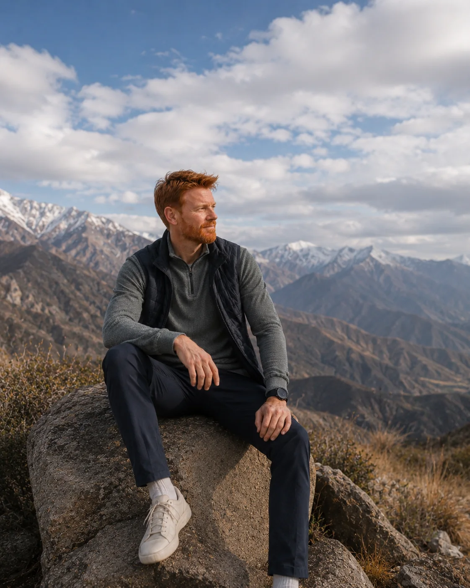
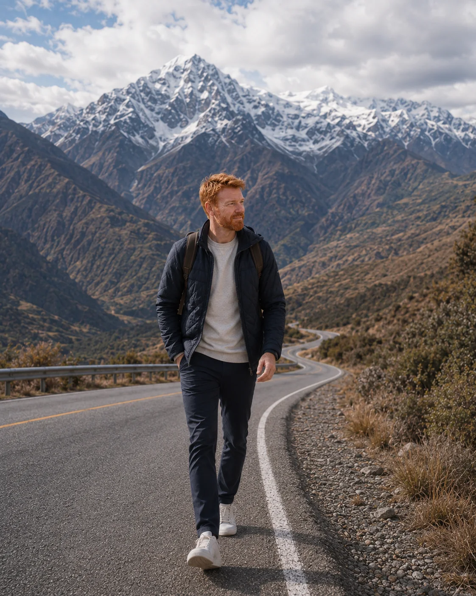
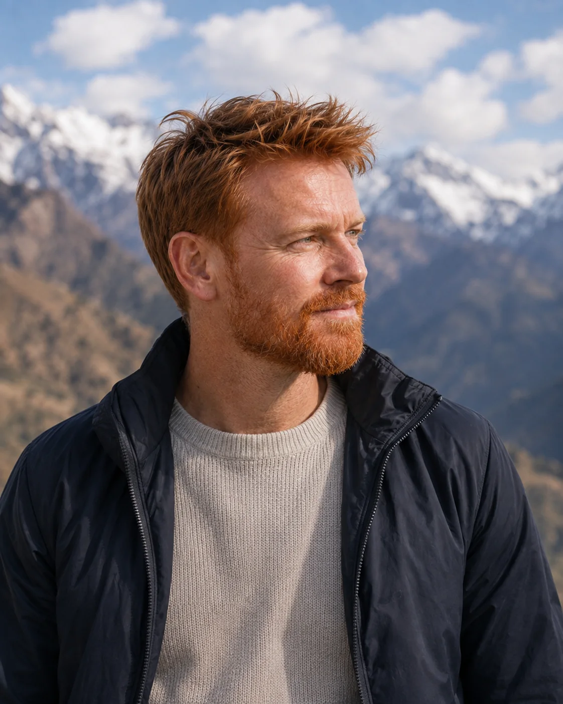

The mountains change planning, clothing and realistic expectations.
In the Andes, scenery stops being mere beauty and starts running the trip. It affects temperature, clothing, movement, pace, base choice and what really makes sense to do in a single day.

The most useful thing is not simply “going to the Andes,” but understanding what kind of mountain relationship you want.
The mountains change planning, clothing and realistic expectations.
Even on mostly urban trips, the Andes ask for attention to cold, wind and thermal range.
Mountain experiences improve when you stop trying to stack too much into one block.
The range works especially well when paired with a city base like Santiago.
The Andes change scale as the journey moves between road, walking, altitude and pause. This is a landscape best understood in motion — with enough time to stop.

Stopping is part of reading the mountains — and respecting your own rhythm.

In the Andes, getting there is part of the experience, not dead time.

Layers, wind and thermal range show up in the way you dress as well.
Once you understand the role of the mountains, the trip becomes more coherent and less generic.
Do you want contemplation, snow, a scenic road, a photogenic angle or a real mountain chapter? The answer changes everything.
Weather, visibility and displacement matter. Not every day in the Andes delivers the same visual reading.
Even without snow sports, layered clothing tends to solve more than heavy pieces chosen without strategy.
The Andes deserve a real role in the trip, not a generic “must-do” add-on.
The mountain chapter improves when you organise expectation, clothing, timing and urban base.
The word covers very different realities. Name your version before you book.
If you are based in Santiago, leave margin to choose the right day.
Layers, comfortable shoes and protection against wind or cold are the fundamentals.
A looser block usually delivers better scenery, less stress and more context.
They help you understand scale, emptiness, weather and Chilean geography itself.
Mountains and visibility rarely love haste.
Water, sun protection and layers are small decisions that improve the experience a lot.
The Andes shine more when the city base also has breathing room.
Not necessarily. But if the mountains attract you, treat them as a real chapter, not just backdrop.
Both. The key is defining what kind of mountain experience you actually want.
Yes — Santiago is a strong base when the rhythm is realistic.
Very much. Thermal comfort and adaptability change the experience.